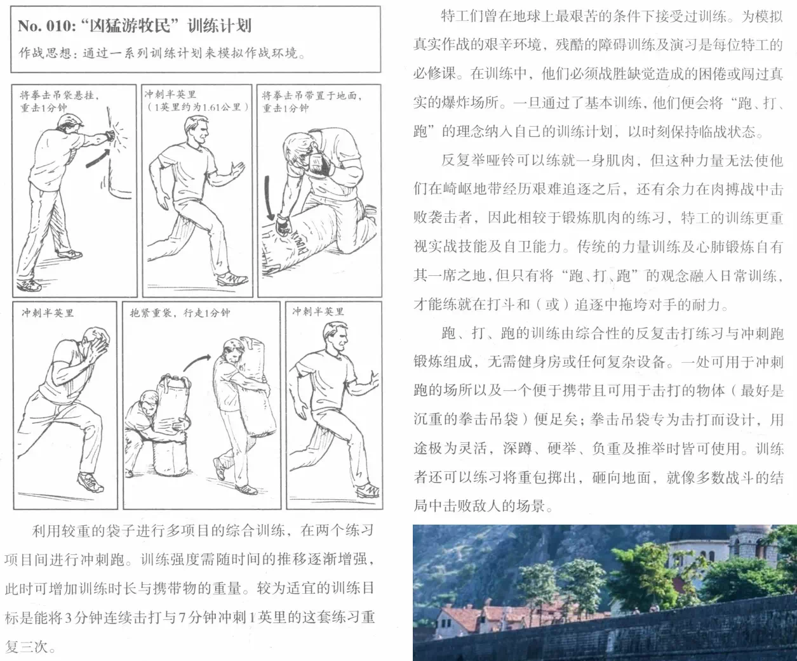
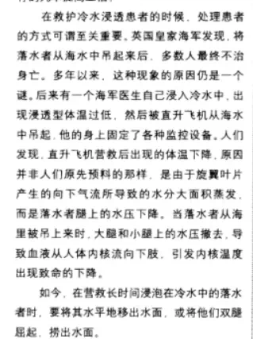
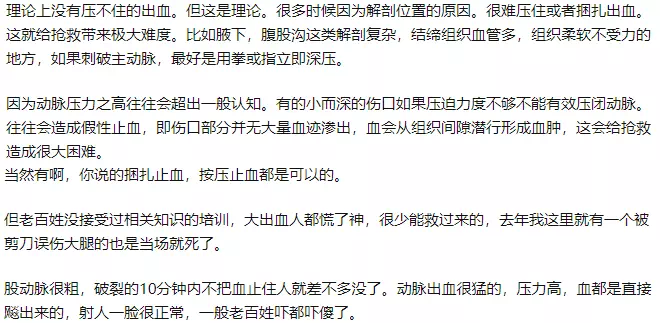

脱水：出发前十五分钟喝一杯水，上路之后，以每二、三十分钟喝至一杯半的速率。 不要等口渴感觉做为什么时候该喝水的凭据。 登山脱水会导致失去方向感、头痛、以致精神不集中。 别等口渴才喝水，口渴是开始脱水的征兆。 登山健康的基本要求之一是大量喝水，不想也要逼自己喝。 登山前大量喝水可增强体力和耐力，攀登二十四小时前大量喝水可增进体能。夏季攀登或是长途时要多喝运动饮料。 热衰竭：出现昏倒、皮肤湿冷、恶心等。出现后使其双脚抬高，头部稍放低，置于阴凉处。  模拟作战环境  冷水浸透处理  假性止血